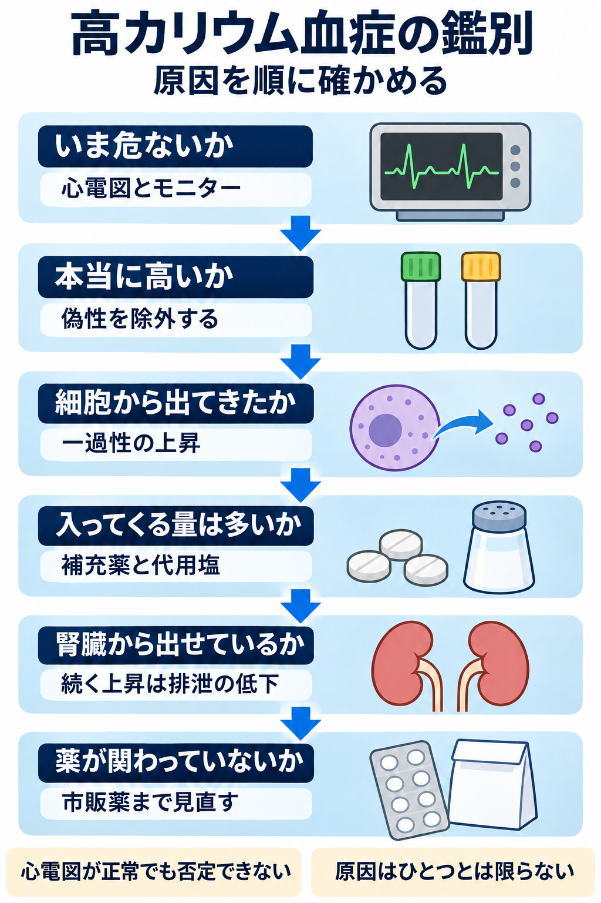

高カリウム血症の鑑別｜インフォグラフィック（原寸拡大）
画像をタップすると原寸のPNG画像が開きます。食事や補充薬などの摂取だけで高カリウム血症になることはまれで、腎排泄の障害が背景にあることがほとんどです。心電図が正常でも高カリウム血症は否定できません。
全体要約：高カリウム血症の鑑別

画像をタップすると原寸のPNG画像が開きます。食事や補充薬などの摂取だけで高カリウム血症になることはまれで、腎排泄の障害が背景にあることがほとんどです。心電図が正常でも高カリウム血症は否定できません。
